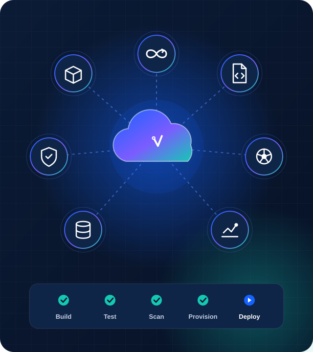
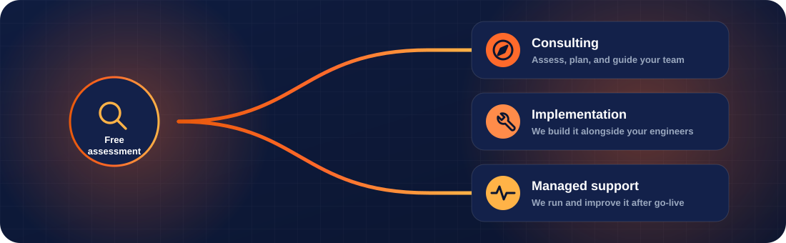

Hands-on DevOps and cloud engineering for the whole delivery lifecycle: containers, infrastructure as code, CI/CD, DevSecOps, Kubernetes, data pipelines and enterprise cloud support on AWS, Azure and Google Cloud.

DevOps Consulting
An honest look at how your team builds, tests and ships today, followed by a practical roadmap: the right tools, branching and release strategy, and the delivery metrics that prove it is working.
DevOps maturity assessment with prioritised quick wins
90-day roadmap covering tools, branching and release process
Baseline delivery metrics (DORA) with clear targets
Maturity assessmentRoadmapsDORA metrics
Docker / Containerization
Your applications packaged into lean, secure container images that behave the same on a laptop, in CI and in production. No more "it works on my machine".
Hardened, multi-stage Dockerfiles and approved base images
Image scanning and versioning built into CI
Private registry setup with tagging and retention policies
DockerMulti-stage buildsImage scanningRegistries
Terraform / Infrastructure as Code (IaC)
Your cloud described in reviewed, versioned code. Reusable Terraform modules and Ansible playbooks turn new environments into a pull request instead of a week of tickets.
Modular Terraform repository with per-environment configuration
Remote state with locking and encryption
Plan-on-pull-request workflow with drift detection
TerraformAnsibleCloudFormationGitOps
CI/CD
Pipelines that build, test, scan and deploy on every change, with approvals, release tagging and one-click rollback built in, on the platform your team already uses.
Reusable pipeline templates (shared libraries or reusable workflows)
Automated tests, quality gates and versioned artifacts
Approvals, release tagging and one-click rollback
JenkinsGitHub ActionsGitLab CIAzure DevOps
DevSecOps
Security that runs automatically on every commit instead of as a last-minute gate: code and dependency scanning, secrets management, policy checks and the audit trail compliance teams ask for.
Code, dependency and container scanning on every pipeline run
Secrets moved into Vault or your cloud's secret manager
Policy-as-code gates and audit-ready compliance reports
SonarQubeTrivyHashiCorp VaultNexus IQ
Kubernetes / Workflow Orchestration
Production-ready clusters on EKS, AKS, GKE or OKE with Helm, autoscaling and GitOps, plus workflow orchestration for the scheduled jobs and pipelines your business depends on.
Production cluster baseline: RBAC, namespaces and network policies
Helm charts with GitOps deployments through Argo CD
Autoscaling, monitoring and Airflow workflow scheduling
KubernetesHelmArgo CDApache Airflow
Data Pipeline Engineering / DataOps
The same discipline for data that you expect for code: versioned database changes, tested Databricks and Airflow deployments, and promotions between environments you can trust.
Liquibase changelogs with automated validation and promotion
Deployment pipelines for Databricks Asset Bundles and Airflow DAGs
Environment-aware releases with full artifact traceability
LiquibaseDatabricksAirflowAstronomer
Enterprise Cloud Support: AWS / Azure / GCP
Architecture, migration, cost optimisation and day-to-day operational support across the major clouds, with monitoring and on-call options sized to your team.
Well-architected review and step-by-step migration plan
Cost-optimisation report: rightsizing, reservations and savings plans
Monitoring, alerting and runbooks, with optional on-call support
AWSMicrosoft AzureGoogle CloudFinOpsMonitoring
How we engage
Pick the level of help you need
Every engagement starts with a free assessment. From there, choose how much you want us to own, and change it as your team grows.

Consulting
Assessments, architecture reviews and roadmaps your team can act on.
Best when you have engineers in place and want expert direction.
Implementation
Our engineers build the pipelines, platforms and automation alongside yours.
Best when you have a clear goal and need hands-on capacity to deliver it.
Managed support
We operate, monitor and keep improving your platform after go-live.
Best when you want reliable operations without hiring a full DevOps team.
FAQ
Questions teams often ask
How much do your services cost?
It depends on scope. Small, well-defined pieces of work such as a CI/CD setup for one application can be fixed-price; ongoing work is billed monthly. The free assessment ends with a written estimate, so you know the cost before you commit.
How long does a typical project take?
A focused piece of work, like containerising an application or setting up a CI/CD pipeline, usually takes one to three weeks. Larger migrations and platform builds are planned in phases, each delivering something usable.
Do you work with our existing tools and cloud?
Yes. We work with what you already use, whether that is AWS, Azure or Google Cloud, Jenkins, GitHub Actions, GitLab or Azure DevOps, and recommend changes only when they clearly pay off.
How do you handle access and confidentiality?
We are happy to sign an NDA before any access is shared. We work inside your accounts with least-privilege access, and everything we build lives in your repositories.
Do you work with teams outside India?
Yes. We work remotely with teams in any time zone and agree overlapping hours for calls, reviews and support.
What happens after the project ends?
You get documentation, runbooks and a walkthrough so your team can run everything confidently. If you prefer, we can stay on for managed support.
Need something else?
We also run hands-on DevOps coaching and training for engineering teams, and take on custom work such as platform audits, migration rescues and observability roll-outs. If it involves building, shipping or running software, let's talk.